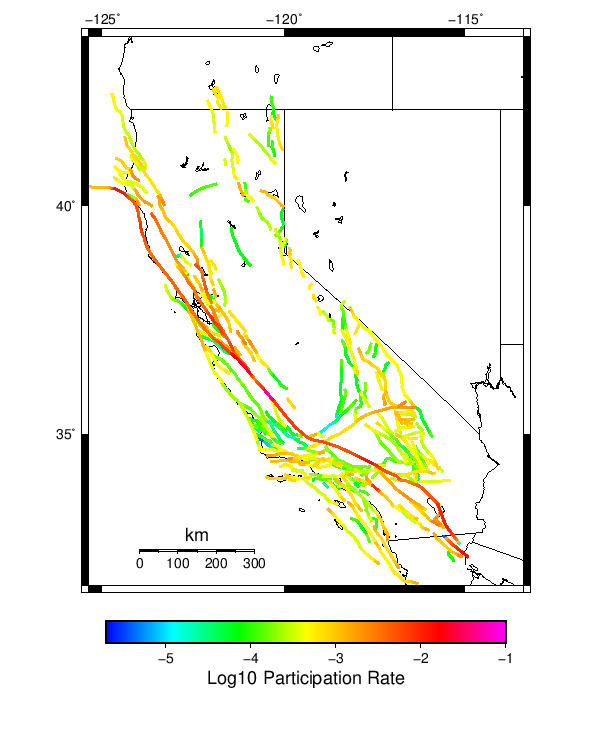
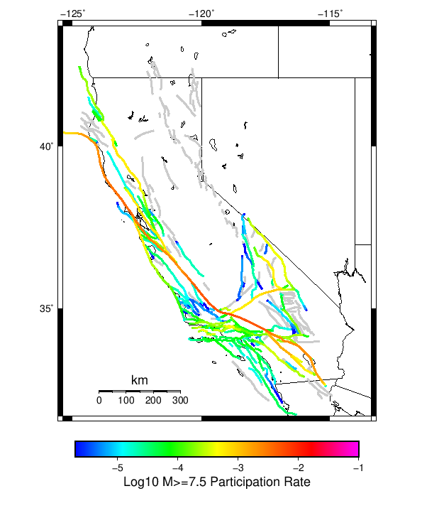
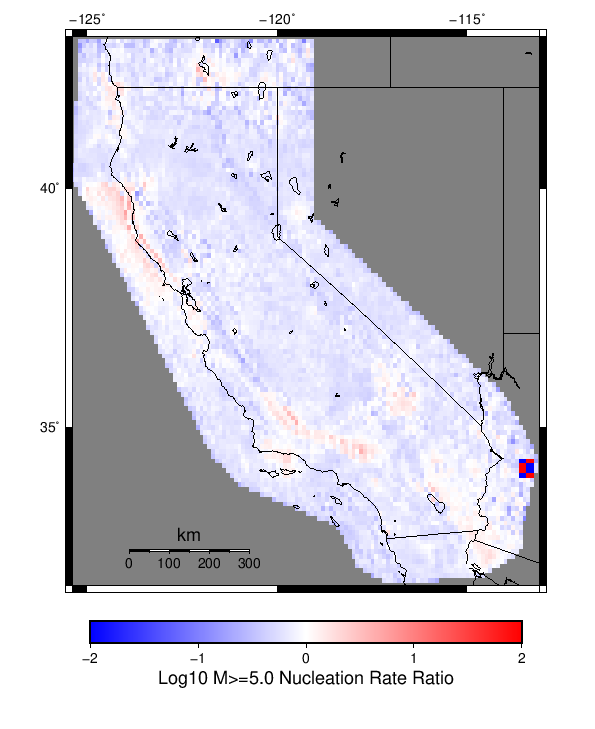

Start 2012, 500 yr, NoERT, Spontaneous, Historical Catalog Results
| Start 2012, 500 yr, NoERT, Spontaneous, Historical Catalog |
|---|
| Num Simulations | 1000 |
| Start Time | 2012/01/01 00:00:00 UTC |
| Start Time Epoch Milliseconds | 1325376000000 |
| Duration | 500 Years |
| Includes Spontaneous? | true |
| Trigger Ruptures | (none) |
| Historical Ruptures | 60366 Trigger Ruptures |
| First: M7.3 at 1852/01/05 04:40:39 UTC |
| Last: M3.2 at 2011/12/31 19:14:44 UTC |
| Largest: M7.9 at 1857/01/09 16:25:39 UTC |
| Config Generated With | u3etas_config_builder.sh --start-year 2012 --num-simulations 1000 --duration-years 500 --prob-model NO_ERT --include-spontaneous --historical-catalog --scale-factor 1.0 --hpc-site USC_HPC --nodes 36 --hours 24 --queue scec |
Table Of Contents
Magnitude Frequency Distribution
(top)
Legend
- Mean (thick black line): mean annual rate across all 1000 catalogs
- 2.5%,97.5% (thin black lines): annual rate percentiles across all 1000 catalogs
- Median (thin blue line): median annual rate across all 1000 catalogs
- Mode (thin cyan line): modal annual rate across all 1000 catalogs (scaled to annualized value)
- Fault System Solution (brown line): long-term MFD from the UCERF3 fault system solution
- 500 yr Probability (thin red line): 500 year probability calculated as the fraction of catalogs with at least 1 occurrence
- 500 yr Supraseismogenic Probability (thin dashed red line): same as above, but only for supraseismogenic ruptures on explicitly modeled UCERF3 faults
- 95% Conf (light red shaded region): binomial 95% confidence bounds on probability
| Mag | Mean | 2.5 %ile | 97.5 %ile | Median | Mode | Long-Term Fault System Solution | 500 yr Probability | 500 yr Prob 95% Conf | 500 yr Supra-Seis Prob |
|---|
| M≥5 | 7.930 | 7.204 | 8.710 | 7.918 | 8.260 | 8.609 | 1.000 (100.00%) | [99.52% 100.00%] | 1.000 (100.00%) |
| M≥5.1 | 6.281 | 5.686 | 6.914 | 6.268 | 6.120 | 6.830 | 1.000 (100.00%) | [99.52% 100.00%] | 1.000 (100.00%) |
| M≥5.2 | 4.973 | 4.488 | 5.492 | 4.960 | 4.960 | 5.417 | 1.000 (100.00%) | [99.52% 100.00%] | 1.000 (100.00%) |
| M≥5.3 | 3.935 | 3.528 | 4.368 | 3.928 | 3.872 | 4.295 | 1.000 (100.00%) | [99.52% 100.00%] | 1.000 (100.00%) |
| M≥5.4 | 3.110 | 2.784 | 3.432 | 3.110 | 3.042 | 3.404 | 1.000 (100.00%) | [99.52% 100.00%] | 1.000 (100.00%) |
| M≥5.5 | 2.455 | 2.192 | 2.722 | 2.454 | 2.490 | 2.696 | 1.000 (100.00%) | [99.52% 100.00%] | 1.000 (100.00%) |
| M≥5.6 | 1.936 | 1.724 | 2.150 | 1.936 | 1.880 | 2.133 | 1.000 (100.00%) | [99.52% 100.00%] | 1.000 (100.00%) |
| M≥5.7 | 1.522 | 1.342 | 1.698 | 1.518 | 1.502 | 1.686 | 1.000 (100.00%) | [99.52% 100.00%] | 1.000 (100.00%) |
| M≥5.8 | 1.192 | 1.056 | 1.336 | 1.192 | 1.218 | 1.331 | 1.000 (100.00%) | [99.52% 100.00%] | 1.000 (100.00%) |
| M≥5.9 | 0.918 | 0.808 | 1.040 | 0.916 | 0.956 | 1.036 | 1.000 (100.00%) | [99.52% 100.00%] | 1.000 (100.00%) |
| M≥6 | 0.736 | 0.642 | 0.834 | 0.736 | 0.724 | 0.836 | 1.000 (100.00%) | [99.52% 100.00%] | 1.000 (100.00%) |
| M≥6.1 | 0.574 | 0.496 | 0.654 | 0.574 | 0.594 | 0.660 | 1.000 (100.00%) | [99.52% 100.00%] | 1.000 (100.00%) |
| M≥6.2 | 0.460 | 0.394 | 0.532 | 0.460 | 0.466 | 0.529 | 1.000 (100.00%) | [99.52% 100.00%] | 1.000 (100.00%) |
| M≥6.3 | 0.369 | 0.312 | 0.432 | 0.368 | 0.342 | 0.420 | 1.000 (100.00%) | [99.52% 100.00%] | 1.000 (100.00%) |
| M≥6.4 | 0.294 | 0.246 | 0.348 | 0.292 | 0.290 | 0.332 | 1.000 (100.00%) | [99.52% 100.00%] | 1.000 (100.00%) |
| M≥6.5 | 0.230 | 0.190 | 0.270 | 0.230 | 0.234 | 0.260 | 1.000 (100.00%) | [99.52% 100.00%] | 1.000 (100.00%) |
| M≥6.6 | 0.182 | 0.148 | 0.216 | 0.182 | 0.178 | 0.205 | 1.000 (100.00%) | [99.52% 100.00%] | 1.000 (100.00%) |
| M≥6.7 | 0.141 | 0.112 | 0.172 | 0.142 | 0.144 | 0.160 | 1.000 (100.00%) | [99.52% 100.00%] | 1.000 (100.00%) |
| M≥6.8 | 0.112 | 0.086 | 0.138 | 0.112 | 0.110 | 0.127 | 1.000 (100.00%) | [99.52% 100.00%] | 1.000 (100.00%) |
| M≥6.9 | 0.089 | 0.066 | 0.110 | 0.088 | 0.088 | 0.100 | 1.000 (100.00%) | [99.52% 100.00%] | 1.000 (100.00%) |
| M≥7 | 0.071 | 0.052 | 0.090 | 0.070 | 0.068 | 0.078 | 1.000 (100.00%) | [99.52% 100.00%] | 1.000 (100.00%) |
| M≥7.1 | 0.054 | 0.038 | 0.072 | 0.054 | 0.050 | 0.060 | 1.000 (100.00%) | [99.52% 100.00%] | 1.000 (100.00%) |
| M≥7.2 | 0.041 | 0.028 | 0.056 | 0.040 | 0.040 | 0.045 | 1.000 (100.00%) | [99.52% 100.00%] | 1.000 (100.00%) |
| M≥7.3 | 0.033 | 0.022 | 0.046 | 0.032 | 0.032 | 0.035 | 1.000 (100.00%) | [99.52% 100.00%] | 1.000 (100.00%) |
| M≥7.4 | 0.025 | 0.016 | 0.036 | 0.026 | 0.024 | 0.027 | 1.000 (100.00%) | [99.52% 100.00%] | 1.000 (100.00%) |
| M≥7.5 | 0.018 | 0.010 | 0.026 | 0.018 | 0.018 | 0.019 | 1.000 (100.00%) | [99.52% 100.00%] | 1.000 (100.00%) |
| M≥7.6 | 0.013 | 8.00E-3 | 0.020 | 0.014 | 0.012 | 0.014 | 1.000 (100.00%) | [99.52% 100.00%] | 1.000 (100.00%) |
| M≥7.7 | 9.18E-3 | 4.00E-3 | 0.014 | 8.00E-3 | 8.00E-3 | 9.58E-3 | 1.000 (100.00%) | [99.52% 100.00%] | 1.000 (100.00%) |
| M≥7.8 | 6.42E-3 | 2.00E-3 | 0.012 | 6.00E-3 | 6.00E-3 | 6.19E-3 | 0.998 (99.80%) | [99.20% 99.97%] | 0.998 (99.80%) |
| M≥7.9 | 3.51E-3 | 0.000 | 8.00E-3 | 4.00E-3 | 4.00E-3 | 3.51E-3 | 0.905 (90.50%) | [88.47% 92.21%] | 0.905 (90.50%) |
| M≥8 | 1.87E-3 | 0.000 | 6.00E-3 | 2.00E-3 | 2.00E-3 | 2.03E-3 | 0.663 (66.30%) | [63.26% 69.21%] | 0.663 (66.30%) |
| M≥8.1 | 8.66E-4 | 0.000 | 4.00E-3 | 0.000 | 0.000 | 1.02E-3 | 0.376 (37.60%) | [34.60% 40.69%] | 0.376 (37.60%) |
| M≥8.2 | 3.58E-4 | 0.000 | 2.00E-3 | 0.000 | 0.000 | 4.48E-4 | 0.172 (17.20%) | [14.94% 19.72%] | 0.172 (17.20%) |
| M≥8.3 | 6.60E-5 | 0.000 | 2.00E-3 | 0.000 | 0.000 | 1.02E-4 | 0.033 (3.30%) | [2.32% 4.66%] | 0.033 (3.30%) |
| M≥8.4 | 0.000 | 0.000 | 0.000 | 0.000 | 0.000 | 0.000 | 0.000 (0.00%) | [0.00% 0.48%] | 0.000 (0.00%) |
| M≥8.5 | 0.000 | 0.000 | 0.000 | 0.000 | 0.000 | 0.000 | 0.000 (0.00%) | [0.00% 0.48%] | 0.000 (0.00%) |
| M≥8.6 | 0.000 | 0.000 | 0.000 | 0.000 | 0.000 | 0.000 | 0.000 (0.00%) | [0.00% 0.48%] | 0.000 (0.00%) |
| M≥8.7 | 0.000 | 0.000 | 0.000 | 0.000 | 0.000 | 0.000 | 0.000 (0.00%) | [0.00% 0.48%] | 0.000 (0.00%) |
| M≥8.8 | 0.000 | 0.000 | 0.000 | 0.000 | 0.000 | 0.000 | 0.000 (0.00%) | [0.00% 0.48%] | 0.000 (0.00%) |
| M≥8.9 | 0.000 | 0.000 | 0.000 | 0.000 | 0.000 | 0.000 | 0.000 (0.00%) | [0.00% 0.48%] | 0.000 (0.00%) |
| M≥9 | 0.000 | 0.000 | 0.000 | 0.000 | 0.000 | 0.000 | 0.000 (0.00%) | [0.00% 0.48%] | 0.000 (0.00%) |
Long Term Rate Variability
(top)
162 Year Variability
(top)

Download CSV Here
| Magnitude | Mean | Median | Mode | Std. Dev. | 2.5 %-ile | 16 %-ile | 84 %-ile | 97.5 %-ile |
|---|
| 5.0 | 7.9364157 | 7.8950615 | 8.024692 | 0.7798673 | 6.54321 | 7.1728396 | 8.716049 | 9.524692 |
| 5.1 | 6.286381 | 6.2530866 | 5.8209877 | 0.62737453 | 5.1790123 | 5.6666665 | 6.9012346 | 7.5864196 |
| 5.2 | 4.977006 | 4.95679 | 4.9691358 | 0.50720435 | 4.080247 | 4.4753084 | 5.4753084 | 6.012346 |
| 5.3 | 3.938858 | 3.919753 | 4.0061727 | 0.40877327 | 3.2037036 | 3.5370371 | 4.339506 | 4.783951 |
| 5.4 | 3.1129074 | 3.0925925 | 3.0925925 | 0.3300193 | 2.5185184 | 2.7839506 | 3.4382715 | 3.7901235 |
| 5.5 | 2.45728 | 2.4444444 | 2.4814816 | 0.26846033 | 1.9691358 | 2.191358 | 2.7222223 | 3.0185184 |
| 5.6 | 1.9381297 | 1.925926 | 1.8950617 | 0.21729742 | 1.5617284 | 1.7222222 | 2.148148 | 2.3888888 |
| 5.7 | 1.5237716 | 1.5185186 | 1.537037 | 0.17689846 | 1.2037038 | 1.345679 | 1.6975309 | 1.8827161 |
| 5.8 | 1.1934814 | 1.1851852 | 1.191358 | 0.14473568 | 0.9382716 | 1.0493827 | 1.3395061 | 1.4938271 |
| 5.9 | 0.9194609 | 0.91358024 | 0.88271606 | 0.116658196 | 0.7160494 | 0.80246913 | 1.037037 | 1.1666666 |
| 6.0 | 0.73717695 | 0.72839504 | 0.7037037 | 0.09820204 | 0.5555556 | 0.6419753 | 0.8333333 | 0.9444444 |
| 6.1 | 0.5750041 | 0.56790125 | 0.5802469 | 0.08229205 | 0.42592594 | 0.49382716 | 0.66049385 | 0.74691355 |
| 6.2 | 0.46076542 | 0.45679012 | 0.4691358 | 0.069908604 | 0.33333334 | 0.3888889 | 0.5308642 | 0.60493827 |
| 6.3 | 0.36967283 | 0.36419752 | 0.36419752 | 0.059401546 | 0.2654321 | 0.30864197 | 0.43209878 | 0.49382716 |
| 6.4 | 0.29442388 | 0.29012346 | 0.30246913 | 0.050418243 | 0.2037037 | 0.24691358 | 0.34567901 | 0.40123457 |
| 6.5 | 0.23007408 | 0.22839506 | 0.22222222 | 0.04304417 | 0.15432099 | 0.18518518 | 0.27160493 | 0.32098764 |
| 6.6 | 0.18195678 | 0.17901234 | 0.18518518 | 0.036576618 | 0.11728395 | 0.14814815 | 0.21604939 | 0.25925925 |
| 6.7 | 0.14129424 | 0.14197531 | 0.13580246 | 0.031287666 | 0.086419754 | 0.11111111 | 0.17283951 | 0.2037037 |
| 6.8 | 0.11243827 | 0.11111111 | 0.11728395 | 0.026680905 | 0.061728396 | 0.086419754 | 0.13580246 | 0.16666667 |
| 6.9 | 0.08922839 | 0.086419754 | 0.086419754 | 0.023074064 | 0.049382716 | 0.06790123 | 0.11111111 | 0.13580246 |
| 7.0 | 0.070806585 | 0.06790123 | 0.06790123 | 0.019855626 | 0.037037037 | 0.049382716 | 0.09259259 | 0.11111111 |
| 7.1 | 0.054378603 | 0.055555556 | 0.055555556 | 0.017046638 | 0.024691358 | 0.037037037 | 0.074074075 | 0.09259259 |
| 7.2 | 0.041117284 | 0.043209877 | 0.043209877 | 0.014304307 | 0.018518519 | 0.024691358 | 0.055555556 | 0.074074075 |
| 7.3 | 0.032635804 | 0.030864198 | 0.030864198 | 0.01225265 | 0.012345679 | 0.018518519 | 0.043209877 | 0.061728396 |
| 7.4 | 0.025372429 | 0.024691358 | 0.024691358 | 0.010699678 | 0.0061728396 | 0.012345679 | 0.037037037 | 0.049382716 |
| 7.5 | 0.017837448 | 0.018518519 | 0.018518519 | 0.008689216 | 0.0061728396 | 0.012345679 | 0.024691358 | 0.037037037 |
| 7.6 | 0.013320988 | 0.012345679 | 0.012345679 | 0.007122825 | 0.0 | 0.0061728396 | 0.018518519 | 0.030864198 |
| 7.7 | 0.009207819 | 0.0061728396 | 0.0061728396 | 0.0056739068 | 0.0 | 0.0061728396 | 0.012345679 | 0.018518519 |
| 7.8 | 0.006436214 | 0.0061728396 | 0.0061728396 | 0.004686367 | 0.0 | 0.0 | 0.012345679 | 0.018518519 |
| 7.9 | 0.0035020576 | 0.0061728396 | 0.0 | 0.003701574 | 0.0 | 0.0 | 0.0061728396 | 0.012345679 |
| 8.0 | 0.0018497943 | 0.0 | 0.0 | 0.0029771442 | 0.0 | 0.0 | 0.0061728396 | 0.0061728396 |
| 8.1 | 8.5390947E-4 | 0.0 | 0.0 | 0.0021669946 | 0.0 | 0.0 | 0.0 | 0.0061728396 |
| 8.2 | 3.559671E-4 | 0.0 | 0.0 | 0.001439203 | 0.0 | 0.0 | 0.0 | 0.0061728396 |
| 8.3 | 6.378601E-5 | 0.0 | 0.0 | 6.243413E-4 | 0.0 | 0.0 | 0.0 | 0.0 |
| 8.4 | 0.0 | 0.0 | 0.0 | 0.0 | 0.0 | 0.0 | 0.0 | 0.0 |
| 8.5 | 0.0 | 0.0 | 0.0 | 0.0 | 0.0 | 0.0 | 0.0 | 0.0 |
| 8.6 | 0.0 | 0.0 | 0.0 | 0.0 | 0.0 | 0.0 | 0.0 | 0.0 |
| 8.7 | 0.0 | 0.0 | 0.0 | 0.0 | 0.0 | 0.0 | 0.0 | 0.0 |
| 8.8 | 0.0 | 0.0 | 0.0 | 0.0 | 0.0 | 0.0 | 0.0 | 0.0 |
| 8.9 | 0.0 | 0.0 | 0.0 | 0.0 | 0.0 | 0.0 | 0.0 | 0.0 |
| 9.0 | 0.0 | 0.0 | 0.0 | 0.0 | 0.0 | 0.0 | 0.0 | 0.0 |
80 Year Variability
(top)

Download CSV Here
| Magnitude | Mean | Median | Mode | Std. Dev. | 2.5 %-ile | 16 %-ile | 84 %-ile | 97.5 %-ile |
|---|
| 5.0 | 7.938996 | 7.85 | 7.4625 | 1.225151 | 5.825 | 6.7125 | 9.15 | 10.5625 |
| 5.1 | 6.2888165 | 6.2125 | 6.3875 | 0.9809233 | 4.5875 | 5.3125 | 7.2625 | 8.4125 |
| 5.2 | 4.979175 | 4.9375 | 5.025 | 0.79016334 | 3.6125 | 4.1875 | 5.7625 | 6.6625 |
| 5.3 | 3.9407291 | 3.9 | 3.9375 | 0.63503844 | 2.825 | 3.3125 | 4.5625 | 5.3 |
| 5.4 | 3.1143625 | 3.075 | 3.075 | 0.5099772 | 2.225 | 2.6 | 3.6125 | 4.2125 |
| 5.5 | 2.4584916 | 2.425 | 2.2625 | 0.41075277 | 1.7375 | 2.0625 | 2.85 | 3.35 |
| 5.6 | 1.9392291 | 1.9125 | 1.8375 | 0.33126554 | 1.3625 | 1.6125 | 2.2625 | 2.6375 |
| 5.7 | 1.5246291 | 1.5 | 1.45 | 0.26689392 | 1.05 | 1.2625 | 1.775 | 2.1 |
| 5.8 | 1.1941062 | 1.175 | 1.2 | 0.21587971 | 0.8125 | 0.9875 | 1.4 | 1.675 |
| 5.9 | 0.9199229 | 0.9125 | 0.9 | 0.17372079 | 0.6125 | 0.75 | 1.0875 | 1.2875 |
| 6.0 | 0.73744166 | 0.725 | 0.7 | 0.14495207 | 0.475 | 0.6 | 0.875 | 1.05 |
| 6.1 | 0.5752208 | 0.5625 | 0.5625 | 0.12103244 | 0.3625 | 0.4625 | 0.6875 | 0.8375 |
| 6.2 | 0.46094376 | 0.45 | 0.425 | 0.1025888 | 0.2875 | 0.3625 | 0.5625 | 0.6875 |
| 6.3 | 0.36982083 | 0.3625 | 0.375 | 0.08778811 | 0.2125 | 0.2875 | 0.4625 | 0.5625 |
| 6.4 | 0.2946 | 0.2875 | 0.275 | 0.075441524 | 0.1625 | 0.225 | 0.3625 | 0.4625 |
| 6.5 | 0.23020625 | 0.225 | 0.2125 | 0.064721555 | 0.1125 | 0.1625 | 0.3 | 0.3625 |
| 6.6 | 0.18207917 | 0.175 | 0.1625 | 0.05554497 | 0.0875 | 0.125 | 0.2375 | 0.3 |
| 6.7 | 0.14137708 | 0.1375 | 0.1375 | 0.047184266 | 0.0625 | 0.1 | 0.1875 | 0.25 |
| 6.8 | 0.11249167 | 0.1125 | 0.1 | 0.040497717 | 0.0375 | 0.075 | 0.15 | 0.2 |
| 6.9 | 0.08928333 | 0.0875 | 0.0875 | 0.035072748 | 0.025 | 0.05 | 0.125 | 0.1625 |
| 7.0 | 0.07085 | 0.0625 | 0.0625 | 0.030351479 | 0.0125 | 0.0375 | 0.1 | 0.1375 |
| 7.1 | 0.054422915 | 0.05 | 0.05 | 0.026011888 | 0.0125 | 0.025 | 0.075 | 0.1125 |
| 7.2 | 0.041147918 | 0.0375 | 0.0375 | 0.022327574 | 0.0 | 0.025 | 0.0625 | 0.0875 |
| 7.3 | 0.032664582 | 0.025 | 0.025 | 0.019540025 | 0.0 | 0.0125 | 0.05 | 0.075 |
| 7.4 | 0.025391666 | 0.025 | 0.025 | 0.016900396 | 0.0 | 0.0125 | 0.0375 | 0.0625 |
| 7.5 | 0.01786875 | 0.0125 | 0.0125 | 0.013984208 | 0.0 | 0.0 | 0.0375 | 0.05 |
| 7.6 | 0.0133604165 | 0.0125 | 0.0125 | 0.0116429515 | 0.0 | 0.0 | 0.025 | 0.0375 |
| 7.7 | 0.009241667 | 0.0125 | 0.0 | 0.009501775 | 0.0 | 0.0 | 0.0125 | 0.025 |
| 7.8 | 0.00645625 | 0.0 | 0.0 | 0.007824171 | 0.0 | 0.0 | 0.0125 | 0.025 |
| 7.9 | 0.0035125 | 0.0 | 0.0 | 0.0059302785 | 0.0 | 0.0 | 0.0125 | 0.0125 |
| 8.0 | 0.0018541666 | 0.0 | 0.0 | 0.0044956943 | 0.0 | 0.0 | 0.0 | 0.0125 |
| 8.1 | 8.625E-4 | 0.0 | 0.0 | 0.0031930069 | 0.0 | 0.0 | 0.0 | 0.0125 |
| 8.2 | 3.5833335E-4 | 0.0 | 0.0 | 0.0020860224 | 0.0 | 0.0 | 0.0 | 0.0125 |
| 8.3 | 6.25E-5 | 0.0 | 0.0 | 8.817445E-4 | 0.0 | 0.0 | 0.0 | 0.0 |
| 8.4 | 0.0 | 0.0 | 0.0 | 0.0 | 0.0 | 0.0 | 0.0 | 0.0 |
| 8.5 | 0.0 | 0.0 | 0.0 | 0.0 | 0.0 | 0.0 | 0.0 | 0.0 |
| 8.6 | 0.0 | 0.0 | 0.0 | 0.0 | 0.0 | 0.0 | 0.0 | 0.0 |
| 8.7 | 0.0 | 0.0 | 0.0 | 0.0 | 0.0 | 0.0 | 0.0 | 0.0 |
| 8.8 | 0.0 | 0.0 | 0.0 | 0.0 | 0.0 | 0.0 | 0.0 | 0.0 |
| 8.9 | 0.0 | 0.0 | 0.0 | 0.0 | 0.0 | 0.0 | 0.0 | 0.0 |
| 9.0 | 0.0 | 0.0 | 0.0 | 0.0 | 0.0 | 0.0 | 0.0 | 0.0 |
28 Year Variability
(top)
Download CSV Here
| Magnitude | Mean | Median | Mode | Std. Dev. | 2.5 %-ile | 16 %-ile | 84 %-ile | 97.5 %-ile |
|---|
| 5.0 | 7.940229 | 7.5 | 6.642857 | 2.142559 | 4.928571 | 5.964286 | 9.964286 | 13.178572 |
| 5.1 | 6.2896237 | 5.964286 | 5.428571 | 1.7156662 | 3.8214285 | 4.714286 | 7.928571 | 10.428572 |
| 5.2 | 4.979649 | 4.714286 | 4.25 | 1.3740177 | 2.9642856 | 3.7142856 | 6.285714 | 8.285714 |
| 5.3 | 3.9410336 | 3.75 | 3.5714285 | 1.1027938 | 2.3214285 | 2.892857 | 5.0 | 6.607143 |
| 5.4 | 3.1147163 | 2.9642856 | 2.8214285 | 0.8859892 | 1.7857143 | 2.2857144 | 3.9642856 | 5.214286 |
| 5.5 | 2.4588425 | 2.357143 | 2.2142856 | 0.7141715 | 1.3571428 | 1.7857143 | 3.142857 | 4.142857 |
| 5.6 | 1.9394307 | 1.8571428 | 1.6785715 | 0.57552 | 1.0357143 | 1.3928572 | 2.5 | 3.2857144 |
| 5.7 | 1.5248319 | 1.4642857 | 1.3571428 | 0.46342665 | 0.78571427 | 1.0714285 | 1.9642857 | 2.607143 |
| 5.8 | 1.1942017 | 1.1428572 | 1.1071428 | 0.3749724 | 0.60714287 | 0.8214286 | 1.5714285 | 2.0714285 |
| 5.9 | 0.9200903 | 0.89285713 | 0.8214286 | 0.30215836 | 0.42857143 | 0.64285713 | 1.2142857 | 1.6071428 |
| 6.0 | 0.73759663 | 0.71428573 | 0.64285713 | 0.25164095 | 0.32142857 | 0.5 | 0.96428573 | 1.2857143 |
| 6.1 | 0.57544327 | 0.5714286 | 0.5714286 | 0.21093477 | 0.21428572 | 0.35714287 | 0.78571427 | 1.0357143 |
| 6.2 | 0.46111134 | 0.42857143 | 0.39285713 | 0.17905939 | 0.17857143 | 0.2857143 | 0.64285713 | 0.85714287 |
| 6.3 | 0.3699706 | 0.35714287 | 0.2857143 | 0.15399285 | 0.10714286 | 0.21428572 | 0.53571427 | 0.71428573 |
| 6.4 | 0.29469958 | 0.2857143 | 0.25 | 0.13247481 | 0.071428575 | 0.17857143 | 0.42857143 | 0.60714287 |
| 6.5 | 0.2302584 | 0.21428572 | 0.17857143 | 0.11356614 | 0.035714287 | 0.10714286 | 0.35714287 | 0.5 |
| 6.6 | 0.18215126 | 0.17857143 | 0.14285715 | 0.09784929 | 0.035714287 | 0.071428575 | 0.2857143 | 0.39285713 |
| 6.7 | 0.14145589 | 0.14285715 | 0.10714286 | 0.083804145 | 0.0 | 0.071428575 | 0.21428572 | 0.32142857 |
| 6.8 | 0.112537816 | 0.10714286 | 0.071428575 | 0.072462164 | 0.0 | 0.035714287 | 0.17857143 | 0.2857143 |
| 6.9 | 0.08934454 | 0.071428575 | 0.071428575 | 0.06294652 | 0.0 | 0.035714287 | 0.14285715 | 0.25 |
| 7.0 | 0.07087815 | 0.071428575 | 0.035714287 | 0.05504714 | 0.0 | 0.0 | 0.10714286 | 0.21428572 |
| 7.1 | 0.05442227 | 0.035714287 | 0.035714287 | 0.047275804 | 0.0 | 0.0 | 0.10714286 | 0.17857143 |
| 7.2 | 0.041147057 | 0.035714287 | 0.035714287 | 0.04013397 | 0.0 | 0.0 | 0.071428575 | 0.14285715 |
| 7.3 | 0.03267857 | 0.035714287 | 0.0 | 0.035053913 | 0.0 | 0.0 | 0.071428575 | 0.10714286 |
| 7.4 | 0.025415966 | 0.035714287 | 0.0 | 0.030594386 | 0.0 | 0.0 | 0.071428575 | 0.10714286 |
| 7.5 | 0.017886555 | 0.0 | 0.0 | 0.025470508 | 0.0 | 0.0 | 0.035714287 | 0.071428575 |
| 7.6 | 0.013369747 | 0.0 | 0.0 | 0.021533325 | 0.0 | 0.0 | 0.035714287 | 0.071428575 |
| 7.7 | 0.009226891 | 0.0 | 0.0 | 0.01763636 | 0.0 | 0.0 | 0.035714287 | 0.035714287 |
| 7.8 | 0.006457983 | 0.0 | 0.0 | 0.014710895 | 0.0 | 0.0 | 0.035714287 | 0.035714287 |
| 7.9 | 0.0035105043 | 0.0 | 0.0 | 0.01082867 | 0.0 | 0.0 | 0.0 | 0.035714287 |
| 8.0 | 0.0018529412 | 0.0 | 0.0 | 0.007987319 | 0.0 | 0.0 | 0.0 | 0.035714287 |
| 8.1 | 8.6554623E-4 | 0.0 | 0.0 | 0.0055330982 | 0.0 | 0.0 | 0.0 | 0.0 |
| 8.2 | 3.5924368E-4 | 0.0 | 0.0 | 0.0035639617 | 0.0 | 0.0 | 0.0 | 0.0 |
| 8.3 | 6.302521E-5 | 0.0 | 0.0 | 0.0014990198 | 0.0 | 0.0 | 0.0 | 0.0 |
| 8.4 | 0.0 | 0.0 | 0.0 | 0.0 | 0.0 | 0.0 | 0.0 | 0.0 |
| 8.5 | 0.0 | 0.0 | 0.0 | 0.0 | 0.0 | 0.0 | 0.0 | 0.0 |
| 8.6 | 0.0 | 0.0 | 0.0 | 0.0 | 0.0 | 0.0 | 0.0 | 0.0 |
| 8.7 | 0.0 | 0.0 | 0.0 | 0.0 | 0.0 | 0.0 | 0.0 | 0.0 |
| 8.8 | 0.0 | 0.0 | 0.0 | 0.0 | 0.0 | 0.0 | 0.0 | 0.0 |
| 8.9 | 0.0 | 0.0 | 0.0 | 0.0 | 0.0 | 0.0 | 0.0 | 0.0 |
| 9.0 | 0.0 | 0.0 | 0.0 | 0.0 | 0.0 | 0.0 | 0.0 | 0.0 |
Variability Duration Dependence
(top)

Download CSV Here
| Duration (years) | Mean | Median | Mode | Std. Dev. | 2.5 %-ile | 16 %-ile | 84 %-ile | 97.5 %-ile |
|---|
| 1.0 | 7.930294 | 6.0 | 4.0 | 8.979691 | 1.0 | 3.0 | 11.0 | 29.0 |
| 4.0 | 7.930294 | 6.5 | 5.5 | 5.110208 | 3.0 | 4.5 | 10.75 | 22.25 |
| 8.0 | 7.931131 | 7.0 | 5.875 | 3.8072627 | 3.75 | 5.0 | 10.625 | 18.625 |
| 12.0 | 7.932762 | 7.0833335 | 6.0 | 3.1790032 | 4.1666665 | 5.3333335 | 10.5 | 16.666666 |
| 16.0 | 7.931131 | 7.25 | 6.6875 | 2.789814 | 4.4375 | 5.5625 | 10.3125 | 15.375 |
| 20.0 | 7.930294 | 7.35 | 6.8 | 2.5162215 | 4.6 | 5.7 | 10.2 | 14.4 |
| 24.0 | 7.938996 | 7.4583335 | 6.75 | 2.3105912 | 4.75 | 5.8333335 | 10.125 | 13.708333 |
| 28.0 | 7.940229 | 7.5 | 6.642857 | 2.142559 | 4.928571 | 5.964286 | 9.964286 | 13.178572 |
| 32.0 | 7.938996 | 7.5625 | 6.9375 | 2.0075288 | 5.03125 | 6.0625 | 9.90625 | 12.71875 |
| 36.0 | 7.9435406 | 7.611111 | 6.9722223 | 1.8905786 | 5.111111 | 6.138889 | 9.805555 | 12.444445 |
| 40.0 | 7.938996 | 7.65 | 7.2 | 1.778099 | 5.25 | 6.225 | 9.7 | 12.125 |
| 44.0 | 7.9377294 | 7.7045455 | 7.318182 | 1.7001208 | 5.318182 | 6.2954545 | 9.613636 | 11.886364 |
| 48.0 | 7.938996 | 7.75 | 6.7708335 | 1.6095183 | 5.4166665 | 6.3541665 | 9.520833 | 11.604167 |
| 52.0 | 7.9435406 | 7.75 | 7.3846154 | 1.5492288 | 5.519231 | 6.4038463 | 9.5 | 11.423077 |
| 56.0 | 7.9493637 | 7.785714 | 7.696429 | 1.5074162 | 5.535714 | 6.446429 | 9.446428 | 11.375 |
| 60.0 | 7.938996 | 7.7833333 | 6.883333 | 1.4237791 | 5.616667 | 6.55 | 9.333333 | 11.116667 |
| 64.0 | 7.9493637 | 7.8125 | 7.140625 | 1.3843299 | 5.671875 | 6.578125 | 9.328125 | 11.0 |
| 68.0 | 7.940229 | 7.8235292 | 7.9558825 | 1.3380647 | 5.7058825 | 6.602941 | 9.294118 | 10.867647 |
| 72.0 | 7.9519305 | 7.8333335 | 7.888889 | 1.2833232 | 5.7777777 | 6.6805553 | 9.236111 | 10.75 |
| 76.0 | 7.9467015 | 7.8289475 | 8.342105 | 1.2539933 | 5.8026314 | 6.7105265 | 9.184211 | 10.710526 |
| 80.0 | 7.938996 | 7.85 | 7.4625 | 1.225151 | 5.825 | 6.7125 | 9.15 | 10.5625 |
| 84.0 | 7.9571714 | 7.857143 | 7.845238 | 1.1880035 | 5.857143 | 6.785714 | 9.142858 | 10.440476 |
| 88.0 | 7.949534 | 7.8636365 | 7.193182 | 1.1516008 | 5.8977275 | 6.806818 | 9.102273 | 10.352273 |
| 92.0 | 7.945646 | 7.869565 | 8.423913 | 1.1132653 | 5.9673915 | 6.8369565 | 9.043478 | 10.282609 |
| 96.0 | 7.938996 | 7.875 | 7.78125 | 1.0735328 | 6.0 | 6.875 | 8.979167 | 10.229167 |
| 100.0 | 7.930294 | 7.87 | 8.01 | 1.0441922 | 6.09 | 6.88 | 8.97 | 10.18 |
| 200.0 | 7.9740076 | 7.915 | 7.885 | 0.6784921 | 6.74 | 7.31 | 8.64 | 9.36 |
| 300.0 | 8.0148535 | 7.9933333 | 8.1866665 | 0.5235949 | 7.0666666 | 7.4966664 | 8.533334 | 9.133333 |
| 400.0 | 7.9740076 | 7.9525 | 7.7925 | 0.43158802 | 7.135 | 7.57 | 8.4 | 8.8675 |
| 500.0 | 7.930294 | 7.918 | 8.26 | 0.39013416 | 7.204 | 7.546 | 8.308 | 8.71 |
Simulation Stationarity
(top)

Section Participation
(top)
Section Participation Plots
(top)
| Min Mag | Complete Catalog (including spontaneous) | Ratio WRT Long-Term Model |
|---|
| All Supra. Seis. |  | |
| M≥6.5 |  | |
| M≥7 | |  |
| M≥7.5 |  |  |
| M≥8 |  | |
Supra-Seismogenic Parent Sections Table
(top)
First 10 of 313 with matching ruptures shown
| Parent Name | Total Mean Annual Rate | Total 500 Year Prob | Total 500 Year 95% Conf | Long-Term Fault System Solution Rate |
|---|
| San Andreas (Parkfield) | 0.04986 | 1.000 (100.00%) | [99.52% 100.00%] | 0.047238618 |
| San Andreas (Creeping Section) 2011 CFM | 0.032824 | 1.000 (100.00%) | [99.52% 100.00%] | 0.03419009 |
| San Andreas (Mojave S) | 0.026068 | 1.000 (100.00%) | [99.52% 100.00%] | 0.016211301 |
| Mendocino | 0.01977 | 1.000 (100.00%) | [99.52% 100.00%] | 0.028919645 |
| Cerro Prieto | 0.015872 | 1.000 (100.00%) | [99.52% 100.00%] | 0.015186971 |
| Imperial | 0.01288 | 1.000 (100.00%) | [99.52% 100.00%] | 0.014349225 |
| Hayward (So) 2011 CFM | 0.012174 | 1.000 (100.00%) | [99.52% 100.00%] | 0.009440966 |
| Brawley (Seismic Zone) alt 1 | 0.011978 | 1.000 (100.00%) | [99.52% 100.00%] | 0.013392845 |
| San Andreas (Offshore) 2011 CFM | 0.010918 | 1.000 (100.00%) | [99.52% 100.00%] | 0.008909097 |
| Elsinore (Glen Ivy) rev | 0.010782 | 0.990 (99.00%) | [98.10% 99.49%] | 0.008455746 |
M≥6.5 Parent Sections Table
(top)
First 10 of 306 with matching ruptures shown
| Parent Name | Total Mean Annual Rate | Total 500 Year Prob | Total 500 Year 95% Conf | Long-Term Fault System Solution Rate |
|---|
| Cerro Prieto | 0.01357 | 1.000 (100.00%) | [99.52% 100.00%] | 0.013091409 |
| San Andreas (Creeping Section) 2011 CFM | 0.013166 | 1.000 (100.00%) | [99.52% 100.00%] | 0.012216282 |
| Mendocino | 0.010702 | 1.000 (100.00%) | [99.52% 100.00%] | 0.012516479 |
| Hayward (So) 2011 CFM | 0.010226 | 0.999 (99.90%) | [99.35% 99.99%] | 0.008140643 |
| San Andreas (Mojave S) | 0.010096 | 1.000 (100.00%) | [99.52% 100.00%] | 0.0067372364 |
| Imperial | 0.008956 | 1.000 (100.00%) | [99.52% 100.00%] | 0.0096799815 |
| San Andreas (San Bernardino N) | 0.008894 | 1.000 (100.00%) | [99.52% 100.00%] | 0.0067538084 |
| Brawley (Seismic Zone) alt 1 | 0.008576 | 0.999 (99.90%) | [99.35% 99.99%] | 0.009075132 |
| San Andreas (Offshore) 2011 CFM | 0.007982 | 1.000 (100.00%) | [99.52% 100.00%] | 0.006658823 |
| San Andreas (Santa Cruz Mts) 2011 CFM | 0.007938 | 1.000 (100.00%) | [99.52% 100.00%] | 0.00821497 |
M≥7 Parent Sections Table
(top)
First 10 of 273 with matching ruptures shown
| Parent Name | Total Mean Annual Rate | Total 500 Year Prob | Total 500 Year 95% Conf | Long-Term Fault System Solution Rate |
|---|
| San Andreas (Creeping Section) 2011 CFM | 0.00837 | 0.997 (99.70%) | [99.05% 99.92%] | 0.007612852 |
| San Andreas (Cholame) rev | 0.007014 | 1.000 (100.00%) | [99.52% 100.00%] | 0.005722108 |
| San Andreas (Mojave S) | 0.006958 | 1.000 (100.00%) | [99.52% 100.00%] | 0.0052993274 |
| San Andreas (Carrizo) rev | 0.00693 | 1.000 (100.00%) | [99.52% 100.00%] | 0.0057427646 |
| San Andreas (Santa Cruz Mts) 2011 CFM | 0.006278 | 0.996 (99.60%) | [98.90% 99.87%] | 0.0062776324 |
| San Andreas (Mojave N) | 0.00598 | 1.000 (100.00%) | [99.52% 100.00%] | 0.0051040766 |
| San Andreas (San Bernardino N) | 0.005972 | 0.996 (99.60%) | [98.90% 99.87%] | 0.004749499 |
| San Andreas (North Coast) 2011 CFM | 0.005662 | 1.000 (100.00%) | [99.52% 100.00%] | 0.005556243 |
| San Andreas (Parkfield) | 0.00562 | 0.991 (99.10%) | [98.23% 99.56%] | 0.004465195 |
| San Andreas (Offshore) 2011 CFM | 0.005594 | 1.000 (100.00%) | [99.52% 100.00%] | 0.0049385377 |
M≥7.5 Parent Sections Table
(top)
First 10 of 215 with matching ruptures shown
| Parent Name | Total Mean Annual Rate | Total 500 Year Prob | Total 500 Year 95% Conf | Long-Term Fault System Solution Rate |
|---|
| San Andreas (Mojave N) | 0.005802 | 0.999 (99.90%) | [99.35% 99.99%] | 0.0049894005 |
| San Andreas (Big Bend) | 0.005326 | 1.000 (100.00%) | [99.52% 100.00%] | 0.0044245115 |
| San Andreas (Mojave S) | 0.005274 | 0.999 (99.90%) | [99.35% 99.99%] | 0.0045267143 |
| San Andreas (Carrizo) rev | 0.004968 | 1.000 (100.00%) | [99.52% 100.00%] | 0.004201805 |
| San Andreas (Cholame) rev | 0.004748 | 0.996 (99.60%) | [98.90% 99.87%] | 0.0040264158 |
| San Andreas (North Coast) 2011 CFM | 0.004466 | 0.999 (99.90%) | [99.35% 99.99%] | 0.0045710644 |
| San Andreas (San Bernardino N) | 0.0043 | 0.981 (98.10%) | [96.99% 98.82%] | 0.0037959707 |
| San Andreas (Creeping Section) 2011 CFM | 0.004098 | 0.935 (93.50%) | [91.74% 94.91%] | 0.0038110747 |
| San Andreas (Parkfield) | 0.003756 | 0.941 (94.10%) | [92.41% 95.44%] | 0.0032088608 |
| San Andreas (Peninsula) 2011 CFM | 0.00357 | 0.977 (97.70%) | [96.51% 98.50%] | 0.0035515025 |
M≥8 Parent Sections Table
(top)
First 10 of 62 with matching ruptures shown
| Parent Name | Total Mean Annual Rate | Total 500 Year Prob | Total 500 Year 95% Conf | Long-Term Fault System Solution Rate |
|---|
| San Andreas (Mojave N) | 0.001682 | 0.628 (62.80%) | [59.71% 65.79%] | 0.0018098651 |
| San Andreas (Mojave S) | 0.001638 | 0.618 (61.80%) | [58.70% 64.81%] | 0.0017636013 |
| San Andreas (Carrizo) rev | 0.001636 | 0.616 (61.60%) | [58.50% 64.61%] | 0.0017508415 |
| San Andreas (Big Bend) | 0.001634 | 0.616 (61.60%) | [58.50% 64.61%] | 0.0017453934 |
| San Andreas (Cholame) rev | 0.001596 | 0.605 (60.50%) | [57.38% 63.53%] | 0.0017193216 |
| San Andreas (San Bernardino N) | 0.001576 | 0.603 (60.30%) | [57.18% 63.34%] | 0.0016807786 |
| San Andreas (Parkfield) | 0.001404 | 0.541 (54.10%) | [50.95% 57.22%] | 0.0015122787 |
| San Andreas (Creeping Section) 2011 CFM | 0.001284 | 0.515 (51.50%) | [48.35% 54.64%] | 0.0014250289 |
| San Andreas (Santa Cruz Mts) 2011 CFM | 8.68E-4 | 0.379 (37.90%) | [34.90% 41.00%] | 0.0010319632 |
| San Andreas (Peninsula) 2011 CFM | 7.76E-4 | 0.348 (34.80%) | [31.86% 37.86%] | 9.2652056E-4 |
Gridded Nucleation
(top)
| Min Mag | Complete Catalog (including spontaneous) | Ratio WRT Long-Term Model |
|---|
| M≥5 | |  |
| M≥6 | | |
| M≥7 | | |
(top)
{
"numSimulations": 1000,
"duration": 500.0,
"startYear": 2012,
"includeSpontaneous": true,
"randomSeed": 1567442589085,
"binaryOutput": true,
"binaryOutputFilters": [
{
"prefix": "results_complete",
"descendantsOnly": false
},
{
"prefix": "results_m5_preserve_chain",
"minMag": 5.0,
"preserveChainBelowMag": true,
"descendantsOnly": false
}
],
"forceRecalc": false,
"simulationName": "Start 2012, 500 yr, NoERT, Spontaneous, Historical Catalog",
"numRetries": 3,
"outputDir": "${ETAS_SIM_DIR}/2019_09_02-Start2012_500yr_NoERT_Spontaneous_HistoricalCatalog",
"triggerCatalog": "${ETAS_LAUNCHER}/inputs/u3_historical_catalog.txt",
"triggerCatalogSurfaceMappings": "${ETAS_LAUNCHER}/inputs/u3_historical_catalog_finite_fault_mappings.xml",
"treatTriggerCatalogAsSpontaneous": true,
"cacheDir": "${ETAS_LAUNCHER}/inputs/cache_fm3p1_ba",
"fssFile": "${ETAS_LAUNCHER}/inputs/2013_05_10-ucerf3p3-production-10runs_COMPOUND_SOL_FM3_1_SpatSeisU3_MEAN_BRANCH_AVG_SOL.zip",
"probModel": "NO_ERT",
"applySubSeisForSupraNucl": true,
"totRateScaleFactor": 1.0,
"gridSeisCorr": true,
"timeIndependentERF": false,
"griddedOnly": false,
"imposeGR": false,
"includeIndirectTriggering": true,
"gridSeisDiscr": 0.1,
"catalogCompletenessModel": "RELAXED",
"configCommand": "u3etas_config_builder.sh --start-year 2012 --num-simulations 1000 --duration-years 500 --prob-model NO_ERT --include-spontaneous --historical-catalog --scale-factor 1.0 --hpc-site USC_HPC --nodes 36 --hours 24 --queue scec",
"configTime": 1567442589085
}